第 4 章 存储管理
地址转换、四种页面置换、工作集与虚拟内存。
来源：课程《操作系统》课件 198 张幻灯片（
index.md） 风格：先类比再定义，公式可背，例题可算，面试常考点单独标注。
4.1 存储管理的目标
4.1.1 我们要解决什么问题
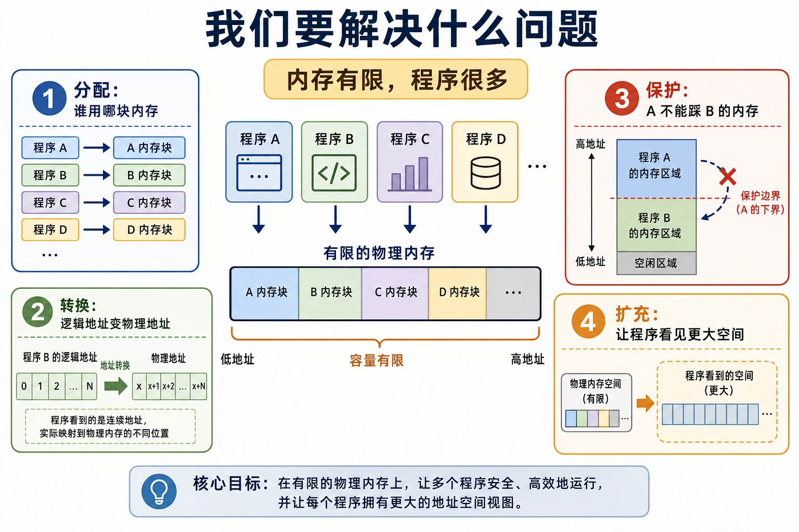
类比：内存就像图书馆的”开架阅览区”——空间有限、想看的书很多、还不能让两个读者抢同一本书。OS 作为”图书管理员”要同时做四件事：
- 主存分配/回收：把有限的内存切给多个程序用，回收后还能给下一个用。
- 地址转换/重定位：屏蔽物理细节，让程序员写代码时不用关心”我会被装到内存哪个位置”。
- 存储保护/共享：A 程序不能踩 B 程序的内存；但共享代码段（比如 libc）允许多程序映射同一份。
- 存储扩充：内存不够？让程序”看上去”有比物理内存大得多的空间——这就是后面虚存的根。
4.1.2 三级存储器层次（slide-008/009/010）
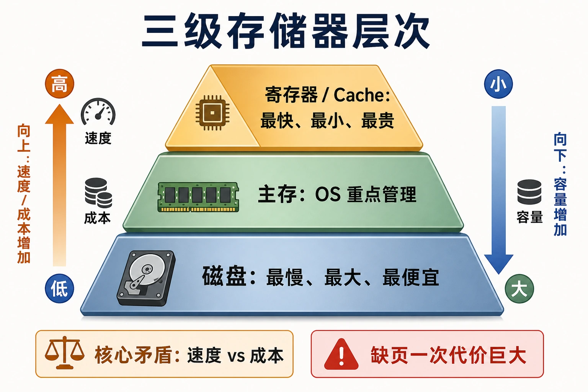
核心矛盾：速度 vs 成本。越快的存储越贵越小，越慢的越便宜越大。
| 层级 | 名字 | 典型容量 | 访问时间 | 带宽 | 谁管 |
|---|---|---|---|---|---|
| L1 | 寄存器 | < 1 KB | 0.25–0.5 ns | 20–100 GB/s | 编译器 |
| L2 | Cache | > 16 MB | 0.5–25 ns | 5–10 GB/s | 硬件 |
| L3 | 主存 | > 16 GB | 80–250 ns | 1–5 GB/s | OS |
| L4 | 磁盘 | > 100 GB | 5,000,000 ns（5ms） | 20–150 MB/s | OS |
面试要点：磁盘比主存慢 5 个数量级——这就是为什么”缺页一次代价巨大”，也是后面所有页面置换算法的优化动机。
CPU 内部本身已经有多级存储（寄存器 + Cache + 段部件 + 分页部件），分页/分段不是 OS 凭空发明，而是硬件提供的能力。
4.1.3 物理地址 vs 逻辑地址
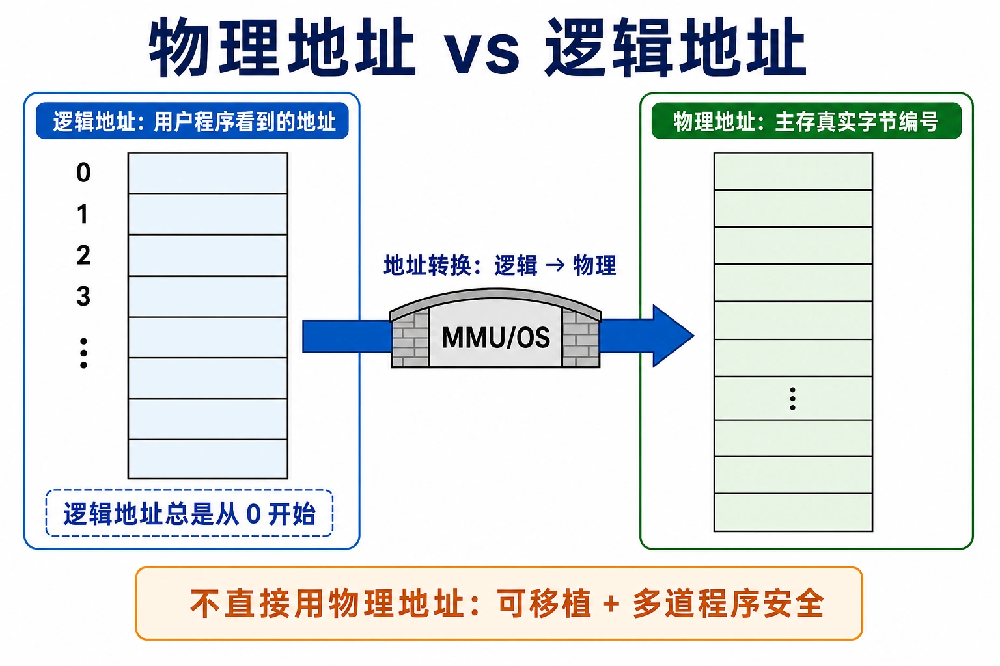
- 物理地址：内存按字节编号，0、1、2… 是一维线性的，唯一的。
- 逻辑地址（虚地址）：用户程序用的地址，总是从 0 开始。
- 为什么不直接用物理地址？
- 用户得自己算位置（每搬一次家整个程序都要改）
- 多道程序同时跑就乱了
- 程序不可移植
4.2 程序装入与链接
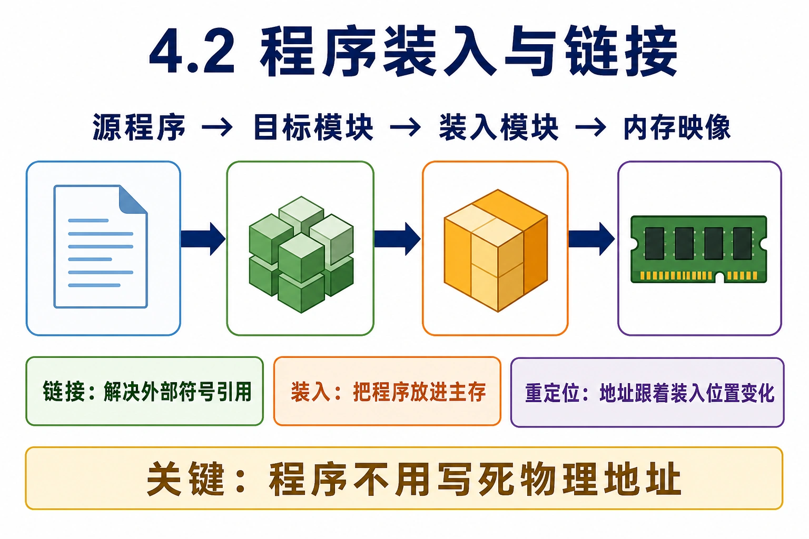
4.2.1 三种链接
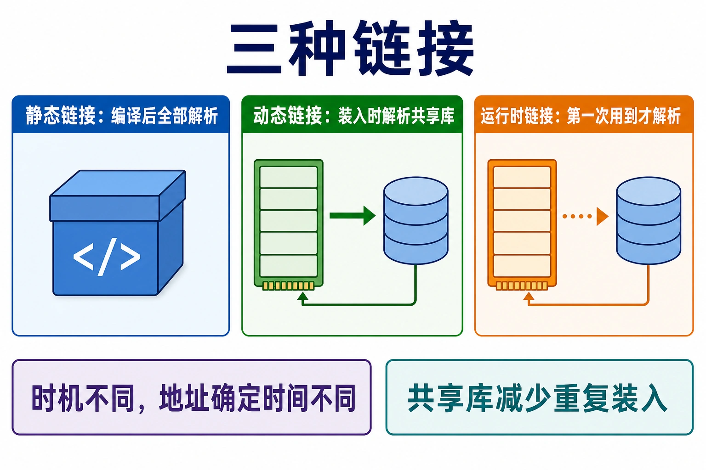
| 时机 | 谁来做 | 什么时候定地址 |
|---|---|---|
| 静态链接 | 链接器 | 编译完成后，所有外部引用全部解析完成 |
| 动态链接 | 装入时 | 装入内存时再解析共享库 |
| 运行时链接 | 进程运行中 | 第一次用到符号才解析（dlopen） |
4.2.2 三种装入
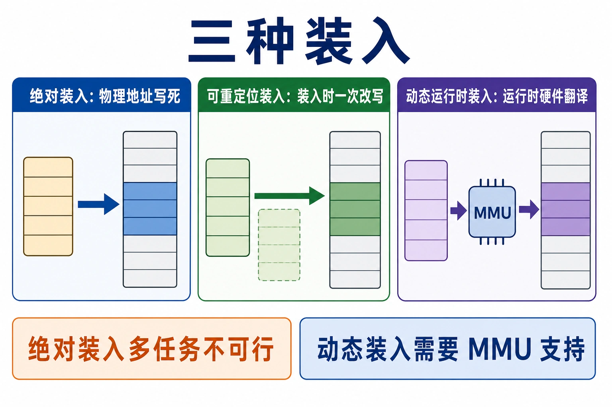
| 方式 | 程序里的地址 | 缺点 |
|---|---|---|
| 绝对装入 | 写死的物理地址 | 必须装到特定位置，多任务下完全不可行 |
| 可重定位装入 | 相对地址，装入时一次性改写 | 装入后不能搬家 |
| 动态运行时装入 | 相对地址，运行时硬件翻译 | 需要 MMU 硬件支持，但灵活 |
4.2.3 三种地址重定位
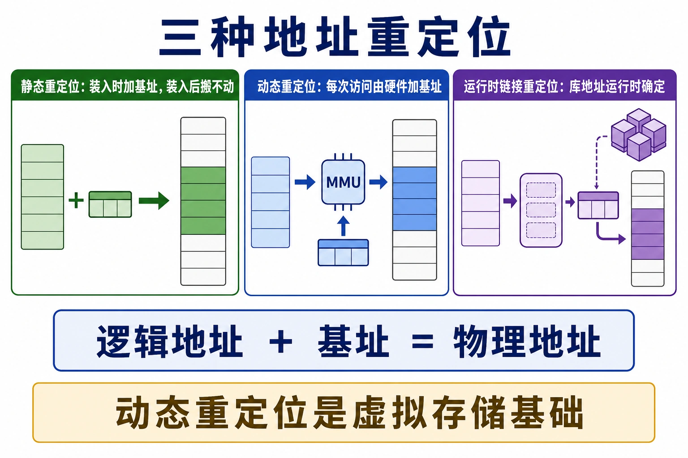
- 静态重定位：装入时由装入程序把”逻辑地址 + 装入基址”算成物理地址。简单不要硬件，但程序装入后搬不动。
- 动态重定位（现代 OS 都用这个）：执行每条指令时由硬件重定位寄存器做加法。基址寄存器内容由 OS 用特权指令设置，程序可以随便搬家。
- 运行时链接重定位：动态链接库地址在运行时确定。
记忆点：动态重定位是虚拟存储的基础，没有 MMU 的硬件支持就没有现代 OS。
slide-020 装入示意（原图已转 mermaid）：程序里写 mov r1, [500] 引用的是程序地址空间内 500 地址；装入时把整个程序基址搬到主存 1000，那条指令”在物理上”就要去访问主存 1500：
flowchart LR
subgraph A["a. 程序地址空间 (0~599)"]
A1["0"] --- A2["100: mov r1, [500]"] --- A3["500: 12345"] --- A4["599"]
end
subgraph B["b. 内存空间 (0~256K-1)"]
B1["0"] --- B2["1000"] --- B3["1100: mov r1, [1500]"] --- B4["1500: 12345"] --- B5["1600"] --- B6["256K-1"]
end
A -->|"装入程序: 基址 +1000"| B
每个程序内地址 d 装入后变成 1000 + d。这就是静态重定位的”一次性改写”，动态重定位则是 MMU 在每次访问时即时做这个加法。
4.2.4 存储保护
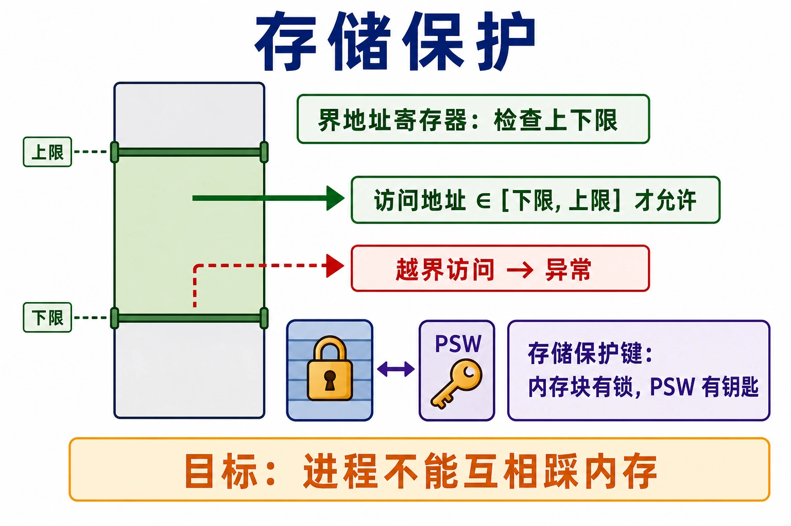
- 界地址寄存器（上限/下限）：CPU 检查每个访问地址 ∈ [下限, 上限]，越界就异常。
- 存储保护键：每块内存有一个键，PSW 里有”钥匙”，访问时比较——配钥匙才能开门。
4.3 连续分配
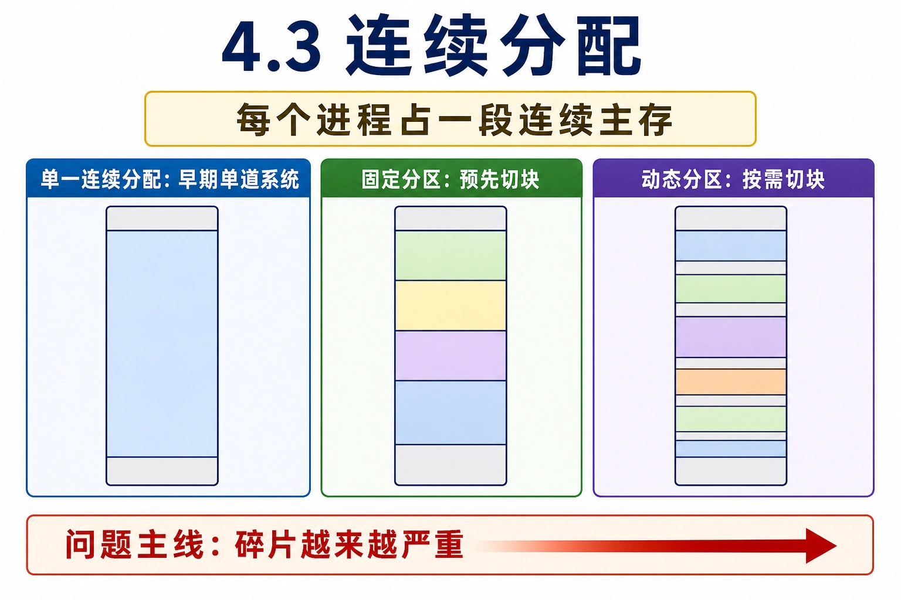
4.3.1 单一连续分配
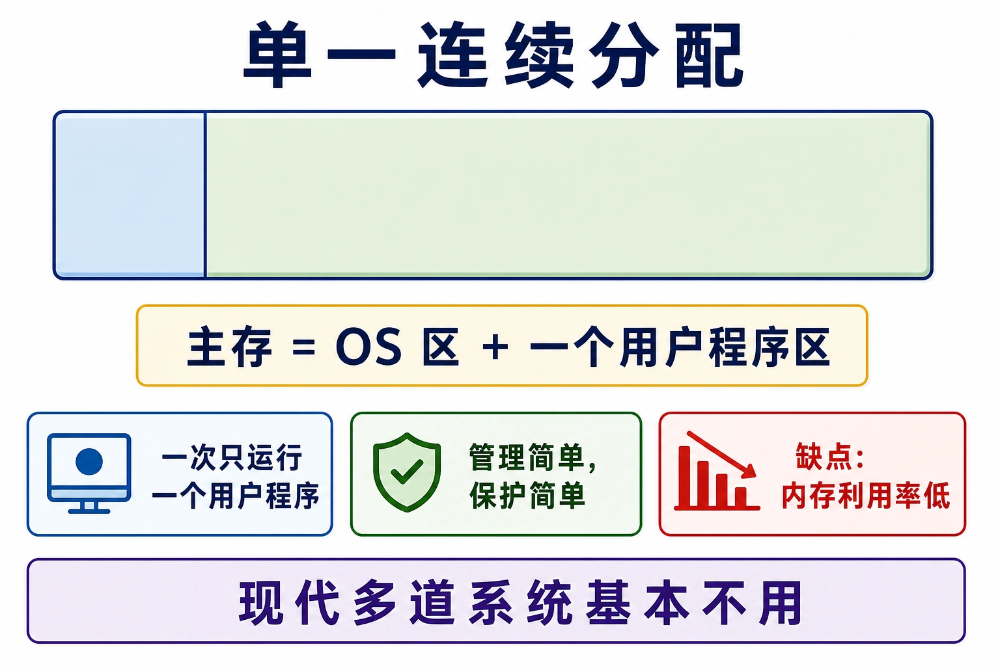
内存只装一个用户程序 + OS。早期单道系统用，现在没人用了。
4.3.2 固定分区
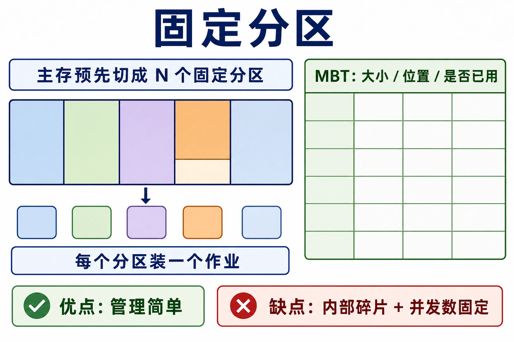
把主存预先切成 N 个固定大小的分区，每个分区给一个作业用。
- 大小相等：管理简单；但小程序浪费、大程序装不下。
- 大小不等（多个 small/medium/large 池）：缓解但不解决。
关键数据结构：MBT（存储分块表）= 分区的”大小、位置、是否已用”三元组。
优点：管理简单，硬件只需一对界地址寄存器。 缺点：必有内部碎片（程序比分区小，剩下空间浪费）；并发数固定。
4.3.3 动态分区（可变分区）
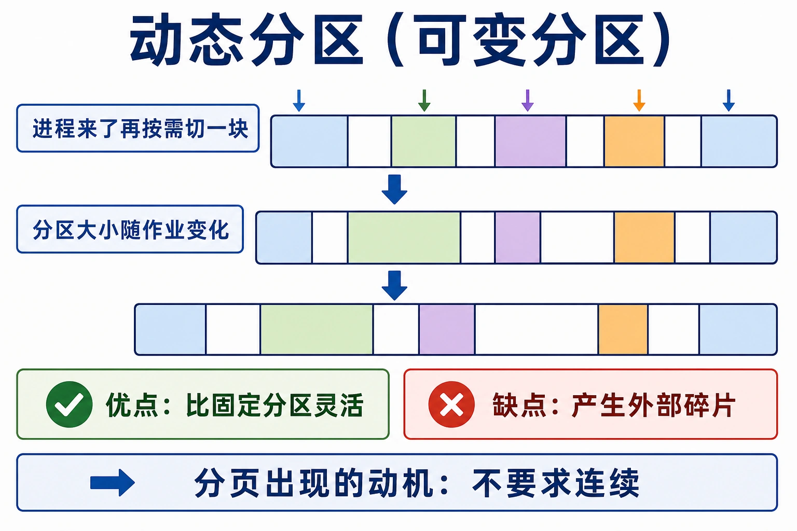
进程来了再动态切一块”刚好够用”的分区。
slide-037 例题（必考原型）： - 物理内存 2560KB，OS 占 0–400K - 5 个进程：P1=600KB(t=10)、P2=1000KB(t=5)、P3=300KB(t=20)、P4=700KB(t=8)、P5=500KB(t=15)
slide-038 演变图（原图已转表）：
| 阶段 | 事件 | 内存布局（自上而下） |
|---|---|---|
| (a) | 初始 | OS(0–400K) ＋ 空闲 400K–2560K（2160K 大空闲） |
| (b) | P1/P2/P3 装入 | OS / P1(400–1000) / P2(1000–2000) / P3(2000–2300) / 空闲(2300–2560，260K) |
| (c) | P2 离开 | OS / P1 / 空洞(1000–2000) / P3 / 空闲——外部碎片首次出现 |
| (d) | P4 装入空洞 | OS / P1 / P4(1000–1700) / 空洞(1700–2000，300K) / P3 / 空闲 |
| (e) | P3 离开 | OS / P1 / P4 / 空洞 / 空洞(2000–2300) / 空闲——两段空洞分裂 |
| (f) | P5 装入 | OS / P1 / P5(900–1000?) / P4 / 空洞 / 空洞 / 空闲——内存被切得更碎 |
记忆点：动态分区天然产生外部碎片——所有空闲加起来够，但每块都太小。这是后续”分页”出现的动机。
数据结构
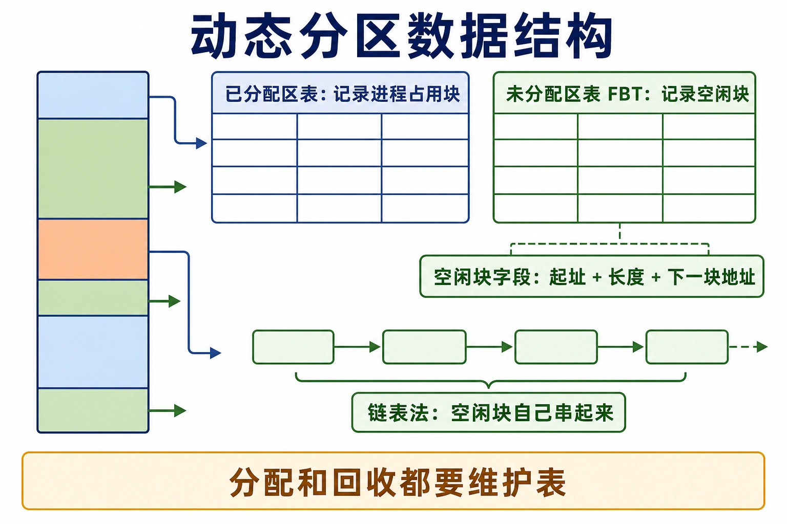
- 已分配区表 + 未分配区表（FBT）
- 链表法：空闲块自身存”长度 + 下一块地址”
分配算法（必背）
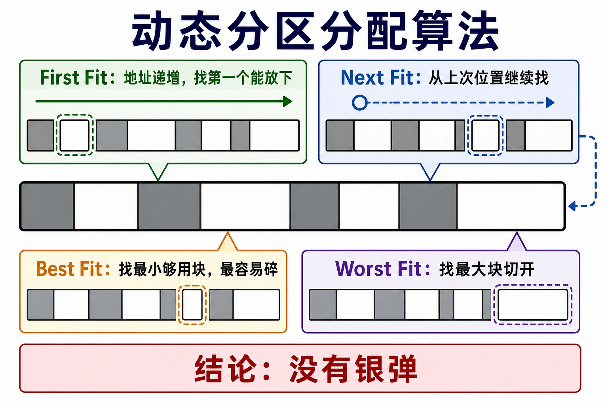
| 算法 | 怎么找 | 排序方式 | 优点 | 缺点 |
|---|---|---|---|---|
| 首次适应 (First Fit) | 从头找第一个能塞下的 | 地址递增 | 高地址大块得以保留；时间快 | 低地址越来越碎 |
| 下次适应 (Next Fit) | 从上次找到的位置继续 | 同上 | 分布均匀 | 大块容易被切碎 |
| 最佳适应 (Best Fit) | 找差距最小的 | 大小递增 | 大块得以保留 | 小空闲块越来越多（最碎） |
| 最坏适应 (Worst Fit) | 找最大的切 | 大小递减 | 剩下的还能用 | 大作业进不来 |
slide-046 例题对比：内存有空隙序列，进程到达顺序不同，不同算法的成败也不同。结论：没有银弹。
回收时合并
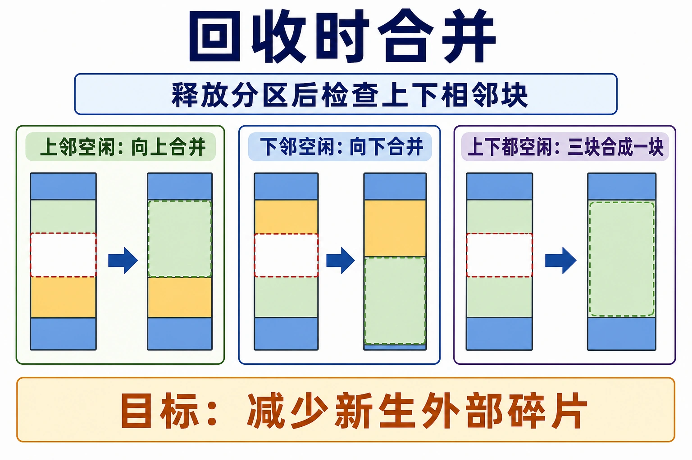
释放分区时检查上下相邻——合并相邻空闲分区（避免新生碎片）。
4.3.4 内部碎片 vs 外部碎片（高频面试）
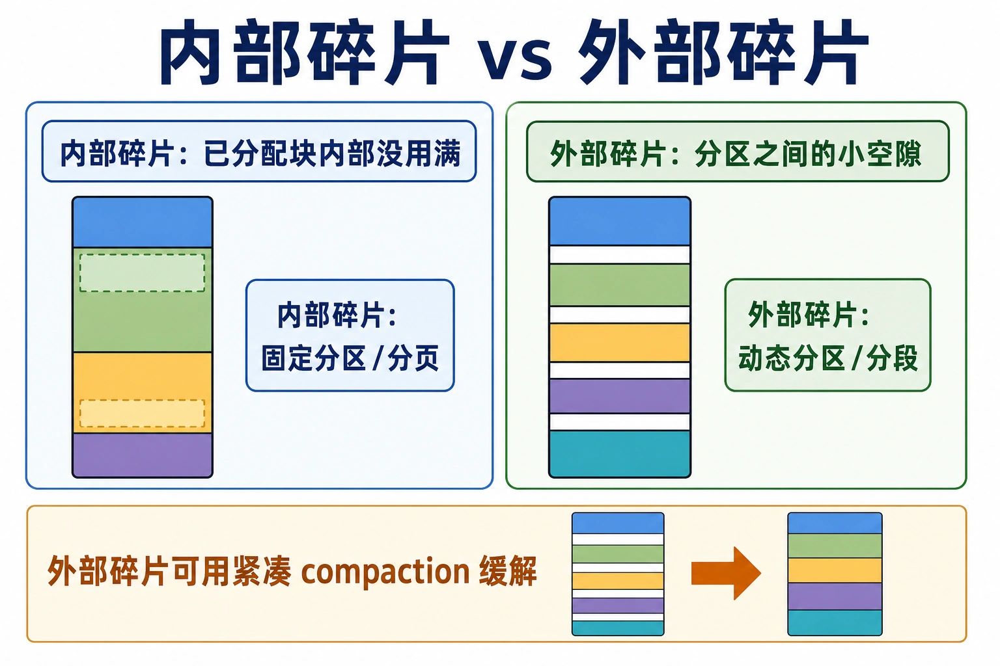
| 内部碎片 | 外部碎片 | |
|---|---|---|
| 在哪 | 已分配分区内部没用满 | 分区之间的小空隙 |
| 谁产生 | 固定分区、分页 | 动态分区、分段 |
| 怎么消除 | 让分区粒度更细（极限就是分页） | 紧凑（compaction，移动程序） |
4.3.5 内存不足的应对
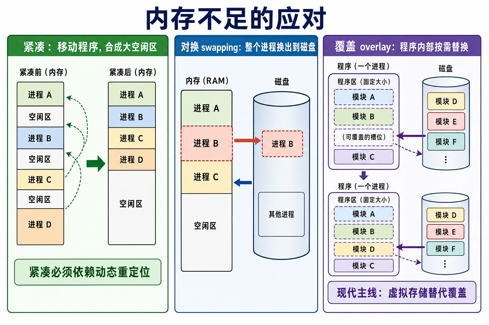
- 移动技术（紧凑）：把零散程序挤到一头，腾出大空闲。必须用动态重定位，否则程序搬家就跑不起来。
- 对换（swapping）：低优先级或时间片用完的进程，整个 PCB 写到磁盘，腾内存给别人。
- 覆盖（overlay）：一个程序内部分段，主程序常驻，不常用的子程序按需替换。用户负担重，早期用，现在被虚存替代。
4.4 分页存储管理
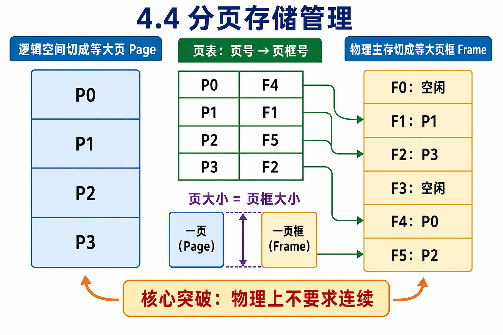
4.4.1 核心概念（slide-062 起）
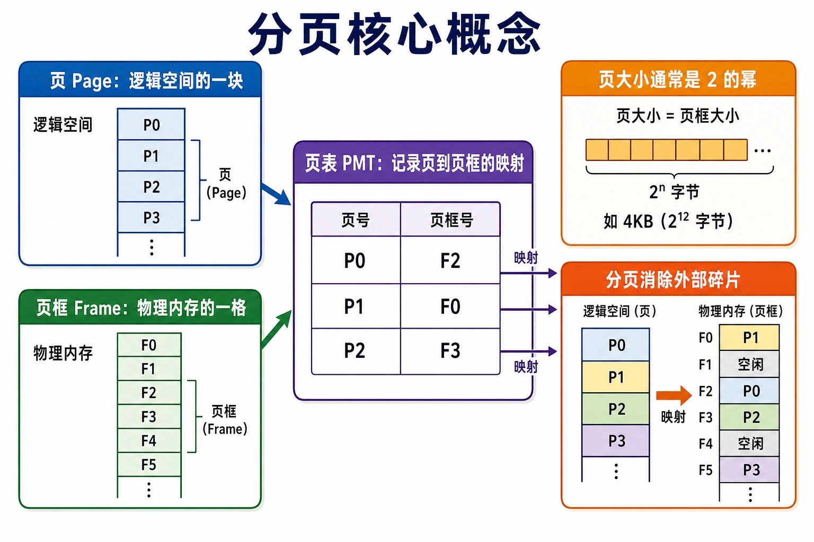
类比：图书馆把每本书都拆成大小一样的”册”（如 4KB），书架上每个格子也是同样大小。一本书的不同册可以放在书架的任意格子里——管理员靠一张”目录表”记录”第几册放在第几格”。
| 词 | 在 OS 里 | 在比喻里 |
|---|---|---|
| 页（Page） | 逻辑空间的一块 | 书的一册 |
| 页框（Frame）/页架/块 | 物理内存的一格 | 书架格子 |
| 页表（PMT） | 页号 → 页框号的映射表 | 这本书的目录 |
关键设计：页大小 = 页框大小，固定且通常是 2 的幂（如 4KB = 2¹²）。
4.4.2 地址转换（必背公式）
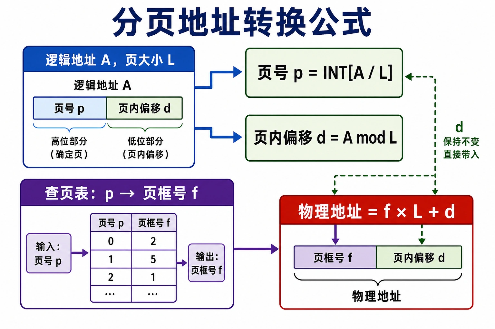
逻辑地址 A，页大小 L：
页号 p = INT[A / L]
页内偏移 d = A mod L
物理地址 = 页框号 × L + d
slide-073 例题：进程页表已知，每页 1024 字节，逻辑地址 2865 求物理地址： - p = INT[2865/1024] = 2 - d = 2865 mod 1024 = 817 - 查页表，第 2 页 → 第 6 块 - 物理地址 = 6 × 1024 + 817 = 6961
4.4.3 slide-065 映射图直觉（原图已转 mermaid）
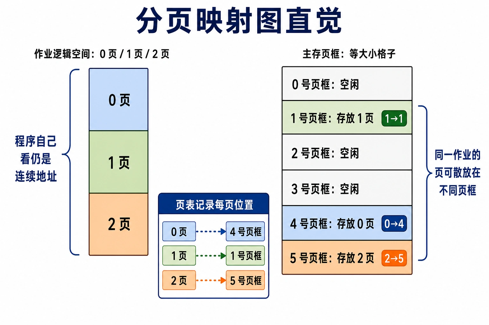
三个作业的逻辑空间都被切成 1KB 等大页，物理主存按 1KB 分页框；OS 占 0–2K，下面交错装着各作业的页（作业 1 的 0/1/2 页可以散布在物理空间任意位置）。核心点：同一作业的页不要求物理连续——这就是分页的革命性突破。
flowchart LR
subgraph J1["作业 1 逻辑 (0~2K-1)"]
J1P0["0 页"]
J1P1["1 页"]
J1P2["2 页"]
end
subgraph J2["作业 2 逻辑 (0~3K-1)"]
J2P0["0 页"]
J2P1["1 页"]
J2P2["2 页"]
end
subgraph J3["作业 3 逻辑 (0~1K-1)"]
J3P0["0 页"]
end
subgraph M["主存 (0~10K-1)"]
M0["0~2K: OS"]
M1["3K: 作业2(0页)"]
M2["4K: 作业1(1页)"]
M3["5K: 作业2(1页)"]
M4["6K: 作业1(0页)"]
M5["7K: 作业3(0页)"]
M6["8K: 作业2(2页)"]
M7["9K: 作业1(2页)"]
end
J1P0 -.-> M4
J1P1 -.-> M2
J1P2 -.-> M7
J2P0 -.-> M1
J2P1 -.-> M3
J2P2 -.-> M6
J3P0 -.-> M5
页在主存中的次序由分配时决定——作业 1 三页可能错落在 6K/4K/9K，作业 2/3 同理，但每个作业自己看是连续的（0、1、2 页）。
4.4.4 页表的烦恼 → 多级页表
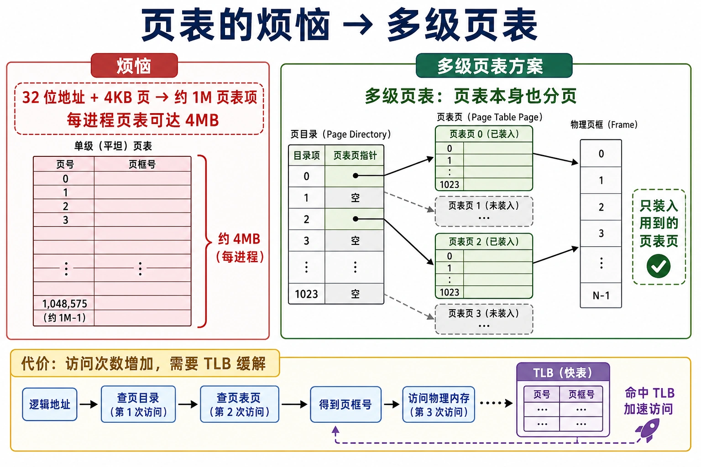
问题：32 位地址空间 + 4KB 页 → 1M 个页表项 × 4B = 每进程 4MB 页表。100 个进程就 400MB！
多级页表思路： - 把页表本身也分页（页表页） - 一级页目录指向各级页表页 - 只有当前用到的页表页才装入主存
代价：访问数据要 3 次访存（页目录 → 页表页 → 数据）。TLB 就是来缓解这个的。
4.4.5 反向页表（IPT）
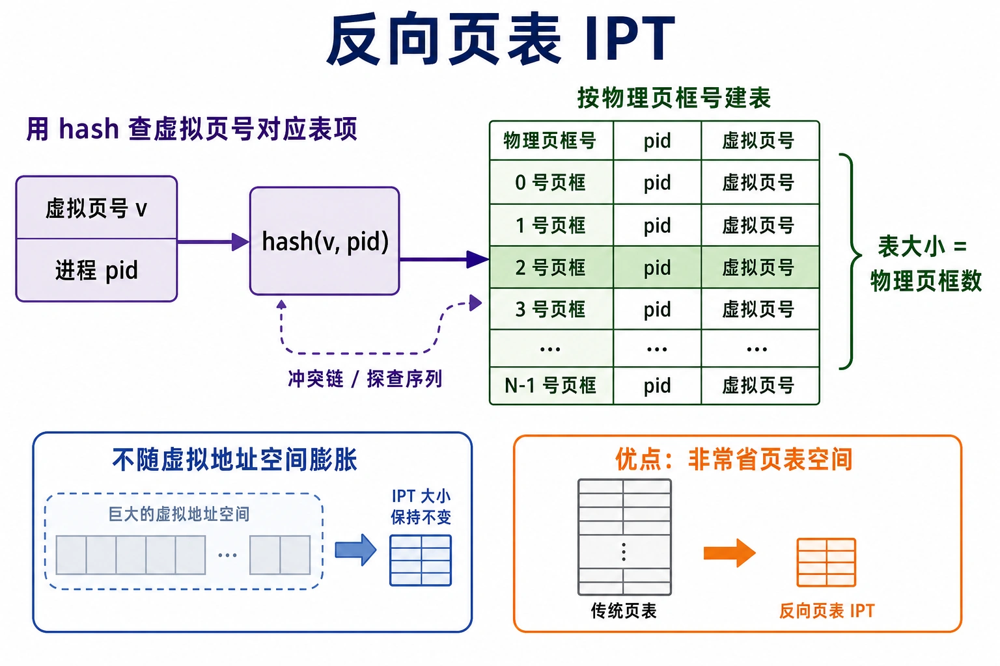
思路反过来：不按逻辑页号建表，按物理页框号建表。 - 表大小 = 物理页框数（与逻辑空间无关） - 用 hash 把虚拟页号映射到表项 - 64MB 主存 + 4KB 页只需 64KB 反向页表——非常省
4.4.6 TLB（快表/Translation Lookaside Buffer）
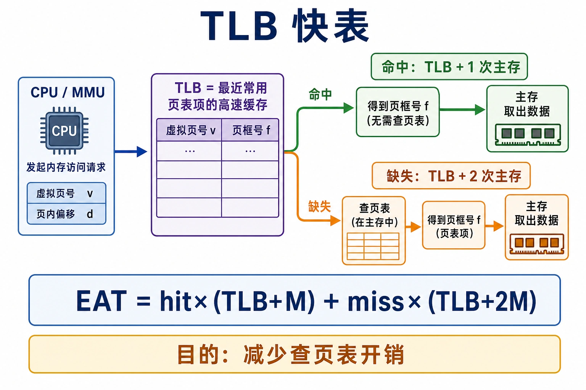
类比：图书管理员每查一次页表都要去远处书柜（主存）翻目录太慢，就在桌上摊开最近常用的几条目录——这就是 TLB，本质是关联高速缓存。
关键公式 — 平均访存时间 EAT：
EAT = (1 - p) × (TLB + 主存)
+ p × (TLB + 2 × 主存)
- p = TLB 缺失率
- TLB = 快表查询时间（如 20ns）
- 主存 = 一次访存时间（如 100ns）
- TLB 命中：1 次主存（直接拿数据）
- TLB 缺失：先访存查页表 + 再访存取数据 = 2 次主存
例：TLB=20ns，主存=100ns，命中率 80%： - EAT = 0.8 × (20+100) + 0.2 × (20+200) = 96 + 44 = 140ns
4.4.7 分页的优缺
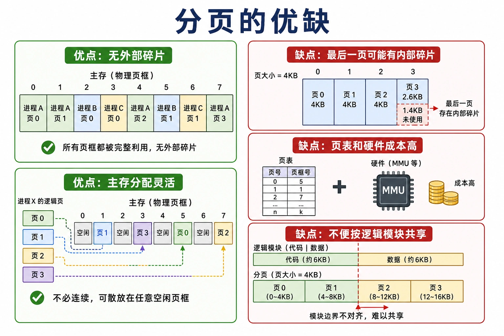
- 优点：无外部碎片；只有每个进程最后一页有内部碎片（最多半页）
- 缺点：必须一次全部装入；硬件支持成本高；不便于按逻辑共享
4.5 分段存储管理
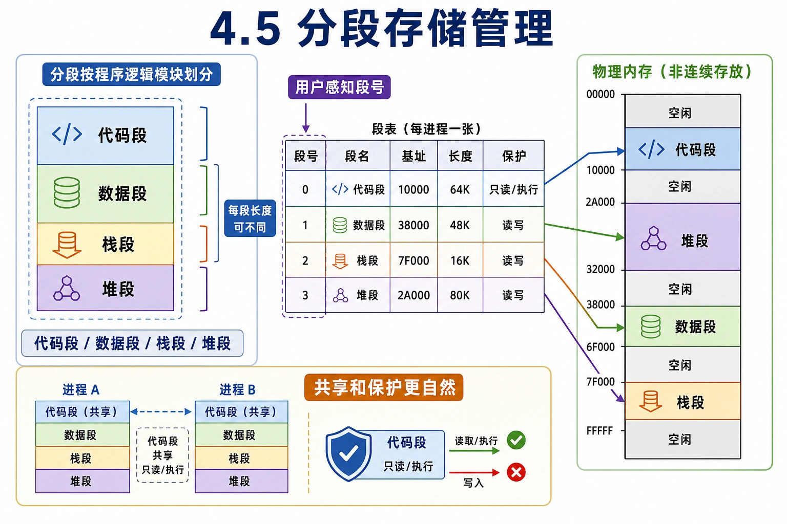
4.5.1 为什么分段（slide-082 起）
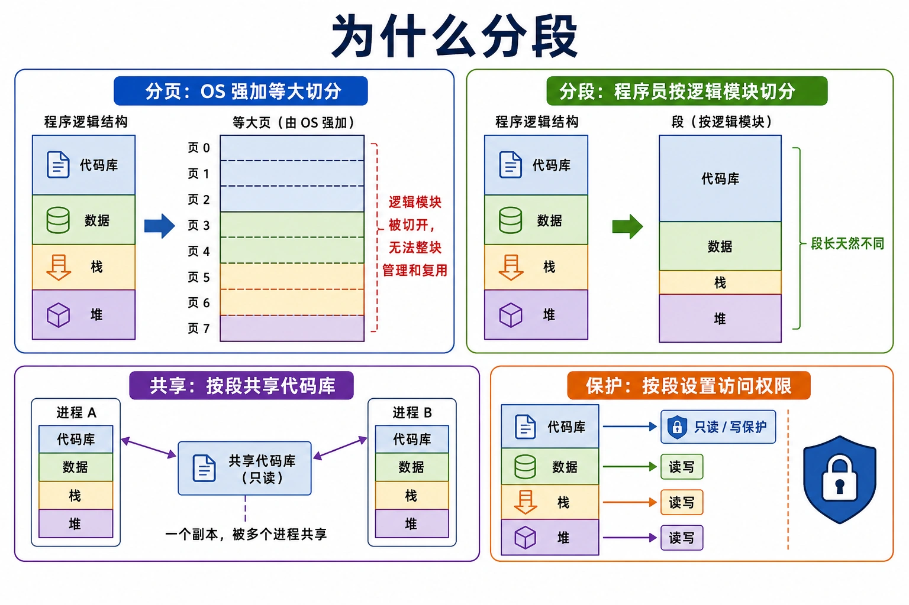
分页是 OS 强加的等大切分（用户不感知，物理单位）。分段是程序员主动按逻辑模块切（用户感知段号，逻辑单位）。
典型分段：代码段 / 数据段 / 栈段 / 堆段 / 共享库段。每段功能独立、长度天然不同。
4.5.2 段式逻辑地址（二维）
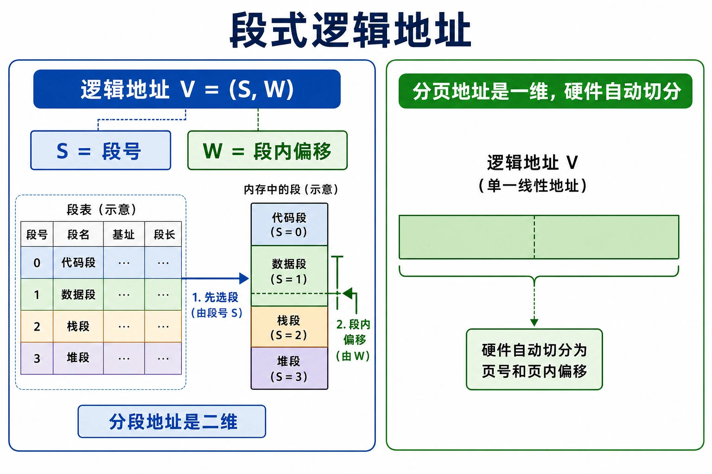
逻辑地址 V = (S, W)
S = 段号
W = 段内偏移
vs 分页的一维地址：分页地址 A 是一维的，硬件自动切成 (页号, 页内偏移)；分段则程序员显式给出 S 和 W。
4.5.3 段表（slide-090 例子）
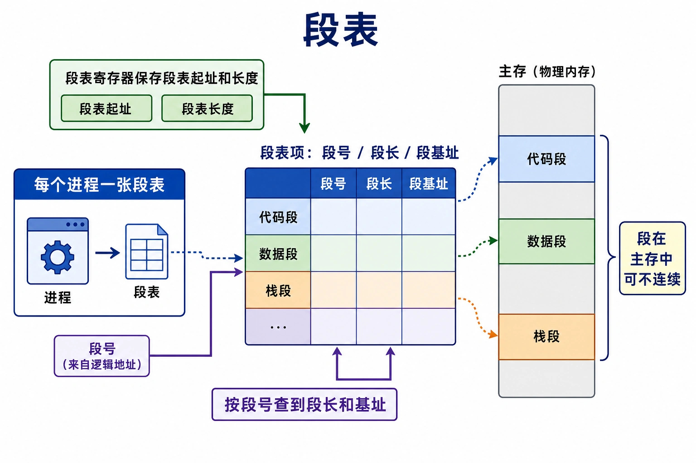
每个进程一张段表，每行：
| 段号 | 段长 | 段基址（在主存中的起始地址） |
|---|---|---|
slide-090 的作业 1 有 5 个段（M、X、Y、A、B），段表记录每段长度和被装入主存的起点。段表寄存器保存当前进程段表的起址和长度。
slide-090 例（原图已转表）——作业 1 的段表与主存装入：
| 逻辑段号 | 段名 | 段长 | 段地址（主存起点） | 主存中位置 |
|---|---|---|---|---|
| 0 | M | K | 3200 | 3200 起 |
| 1 | X | P | 1500 | 1500 起 |
| 2 | Y | L | 6000 | 6000 起 |
| 3 | A | N | 8000 | 8000 起 |
| 4 | B | S | 5000 | 5000 起 |
注意 5 个段在主存中完全不连续（1500、3200、5000、6000、8000），但作业 1 自己看仍是按段号 0~4 索引的二维地址空间——这就是分段在主存里的真实形态。
4.5.4 地址转换（slide-088）
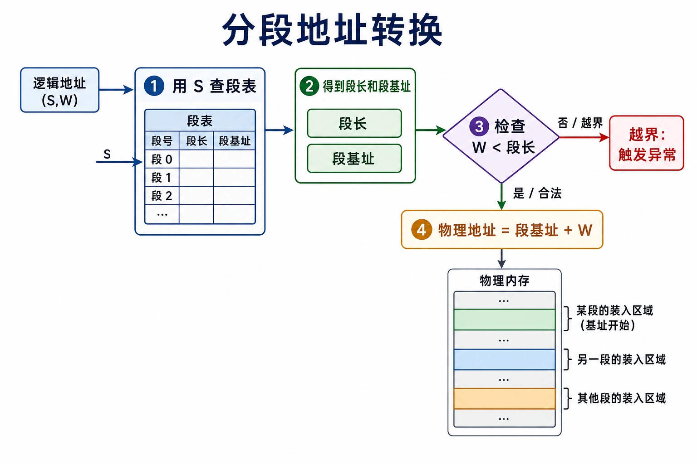
1. 用 S 查段表 → 得 (段长, 段基址)
2. 检查 W < 段长？否则越界异常
3. 物理地址 = 段基址 + W
比分页多一步段长检查，安全性更高。
4.5.5 分段优缺
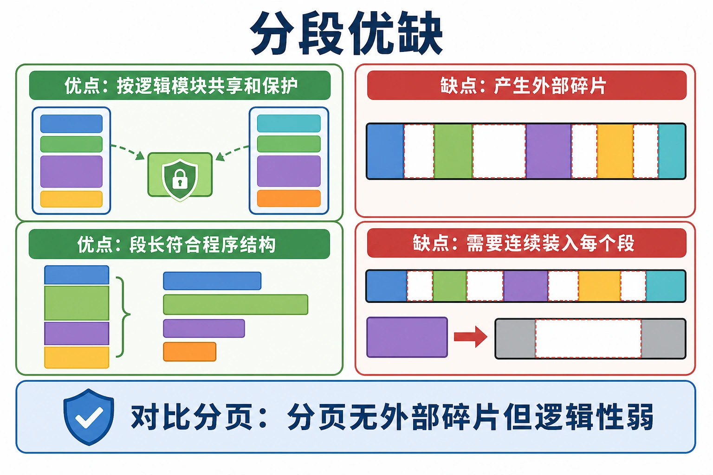
| 分页 | 分段 | |
|---|---|---|
| 切分单位 | 物理（OS 决定，等大） | 逻辑（用户决定，不等长） |
| 地址 | 一维 | 二维 |
| 共享/保护 | 难（按物理页粒度） | 易（按逻辑模块） |
| 碎片 | 内部碎片 | 外部碎片（段长不等） |
4.6 段页式
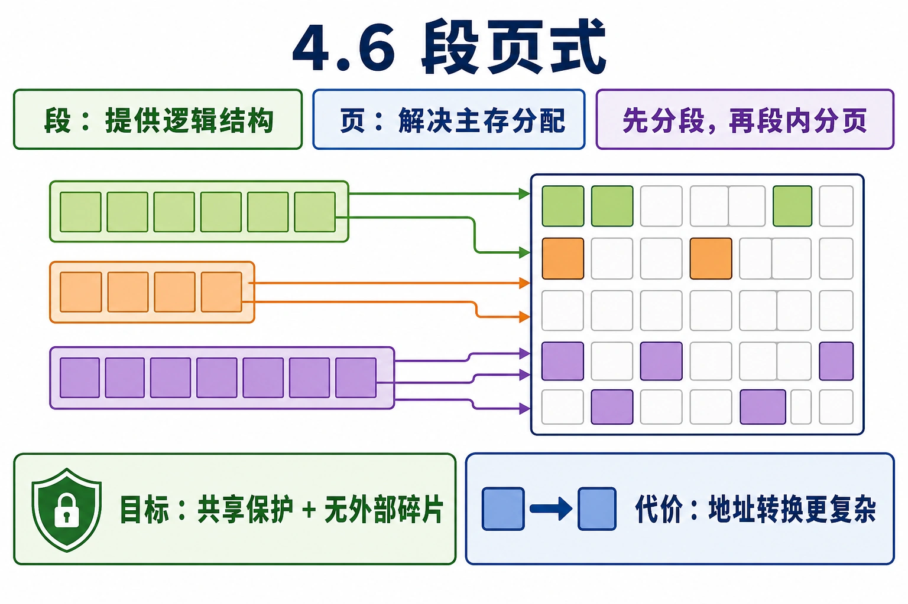
思路：段提供逻辑结构（共享、保护、模块化），页解决主存分配（无外部碎片）。
4.6.1 划分
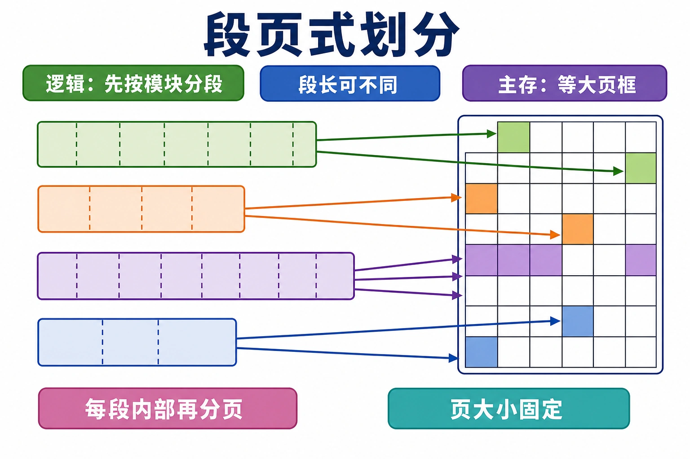
- 主存：等大页框（与分页相同）
- 逻辑：先分段（按程序模块）→ 每段内部再分页
4.6.2 三维逻辑地址
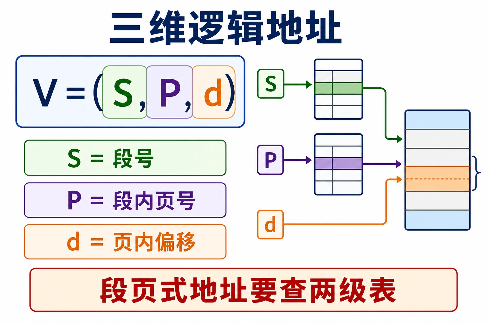
V = (S, P, d)
S = 段号
P = 段内页号
d = 页内偏移
4.6.3 数据结构（三层索引）
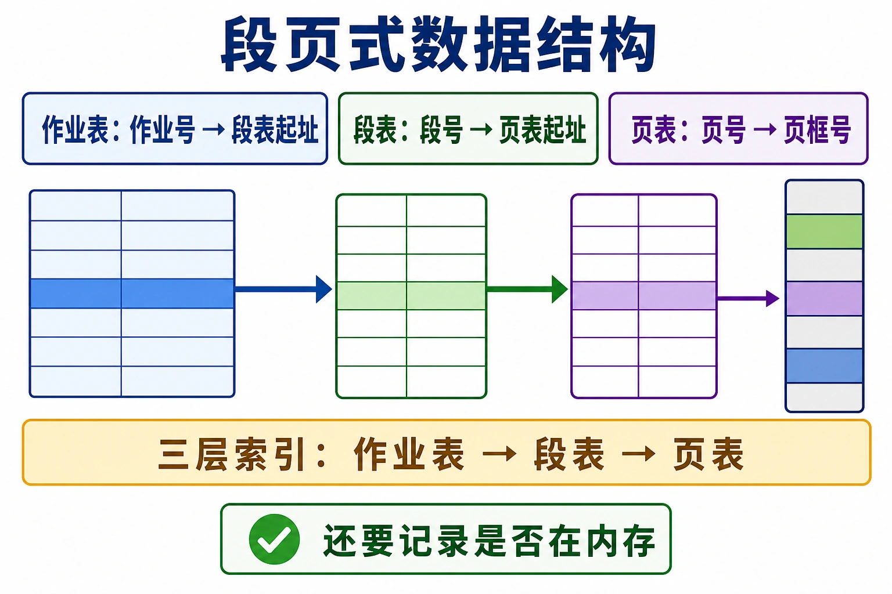
- 作业表：作业号 → 段表起址
- 段表：段号 → 该段页表起址 + 段是否在内存
- 页表：页号 → 页框号 + 页是否在内存
4.6.4 地址转换
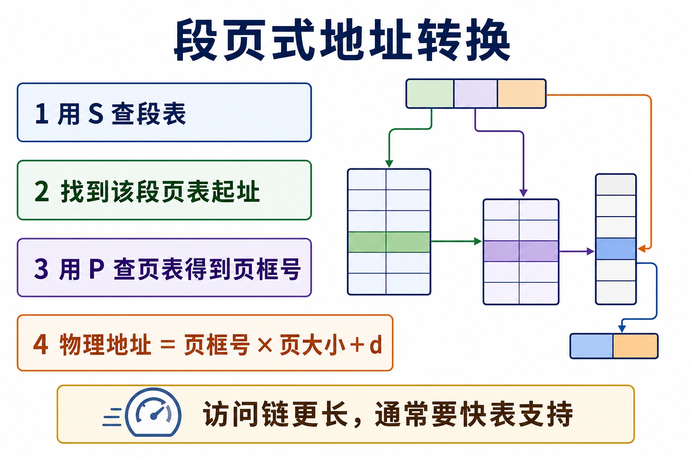
- 查 TLB（带 S+P 联合作为 key），命中直接拼地址
- 缺失 → 段表查页表起址 → 页表查页框号
- 段不在 → 缺段中断；页不在 → 缺页中断
- 共需 3 次访存（段表 + 页表 + 数据），TLB 命中可降为 1 次
4.6.5 优缺
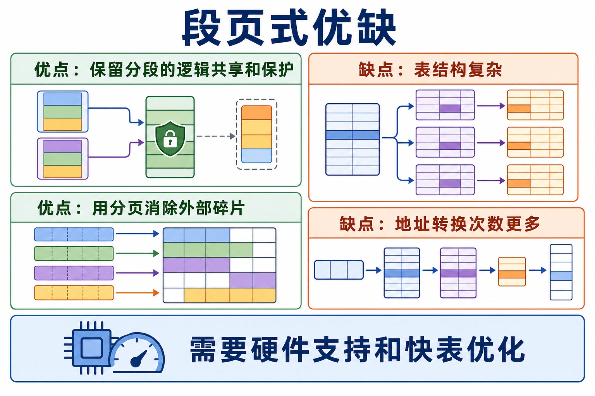
- 优点：兼具段的共享/保护和页的高利用率
- 缺点：每段平均一页内部碎片（比纯分页多）；硬件复杂；管理开销大
4.7 虚拟存储管理（重头戏）
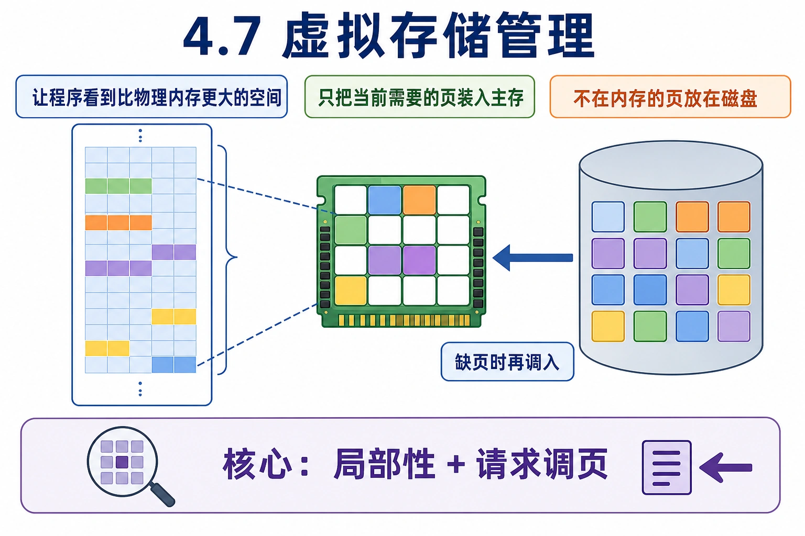
4.7.1 局部性原理（虚存的理论基石）
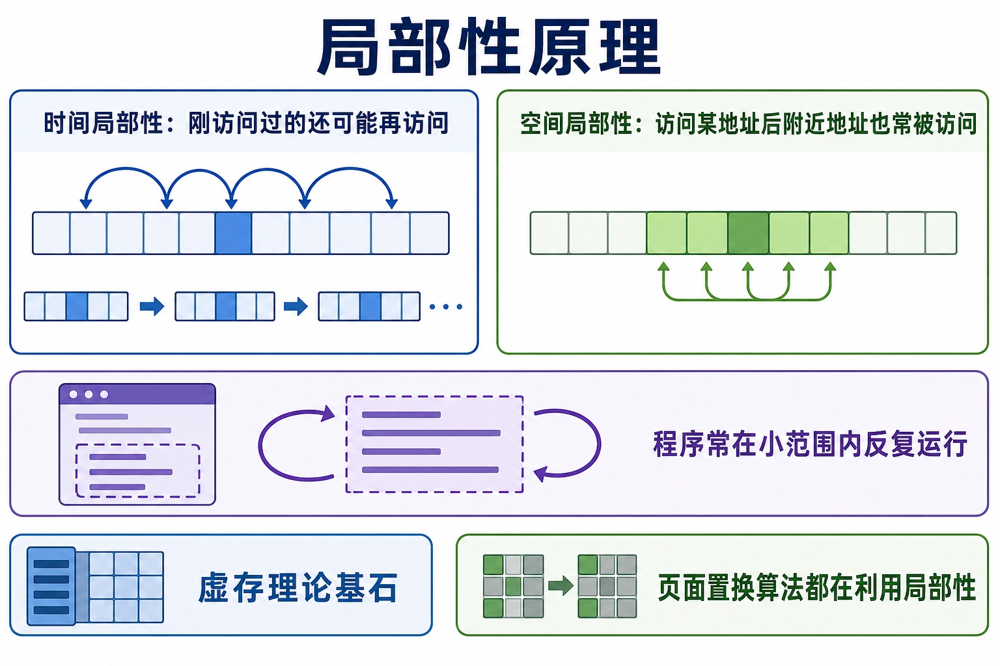
类比：你在一段时间内只看图书馆的几本相关书（空间局部性），一本书翻开后短时间内反复用（时间局部性）。所以——没必要把整个图书馆都搬到桌上。
| 局部性 | 含义 | 典型来源 |
|---|---|---|
| 时间局部性 | 刚访问的指令/数据短时间内还会访问 | 循环、函数反复调用 |
| 空间局部性 | 访问了某地址，附近地址也会被访问 | 顺序执行、数组/记录 |
结论：进程不必全部装入内存就能跑——只把”当前要用的部分”调进来即可。剩下放在磁盘，需要时再换。
4.7.2 虚拟存储器定义
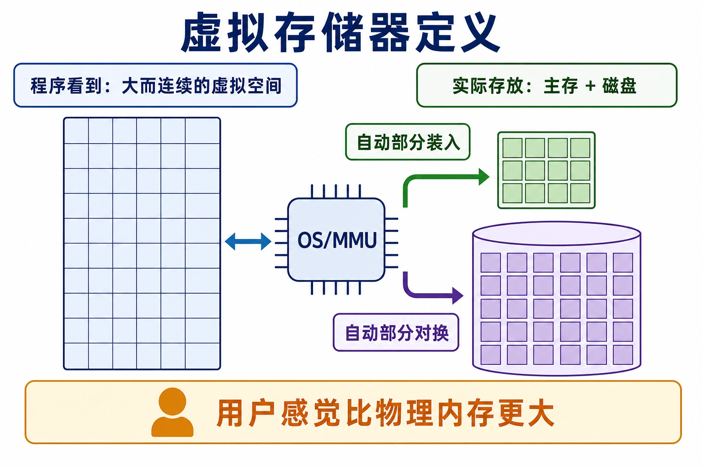
在具有层次结构存储器的计算机系统中，采用自动实现部分装入和部分对换功能，为用户提供一个比物理内存容量大得多的、可寻址的”内存储器”。
类比：图书馆的”开架阅览区”（主存）只有 100 本书的座位，但全馆（外存）有 10 万本。读者（程序员）写借书条时假装可以借任何一本——管理员（OS+MMU）后台帮他换书，他感受不到。
4.7.3 物质基础（实现条件）
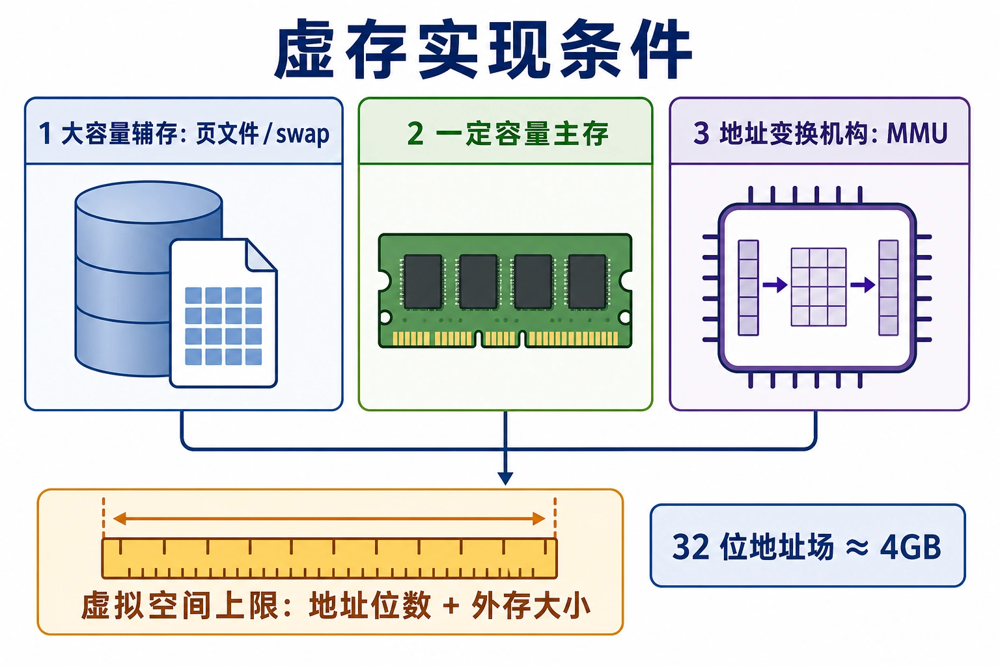
- 较大容量的辅存（页文件 / swap）
- 一定容量的主存
- 地址变换机构（MMU）
虚拟空间限制： - 指令地址场长度（主要原因）— 32 位机器最多 4GB 虚拟空间 - 外存大小
4.7.4 请求分页
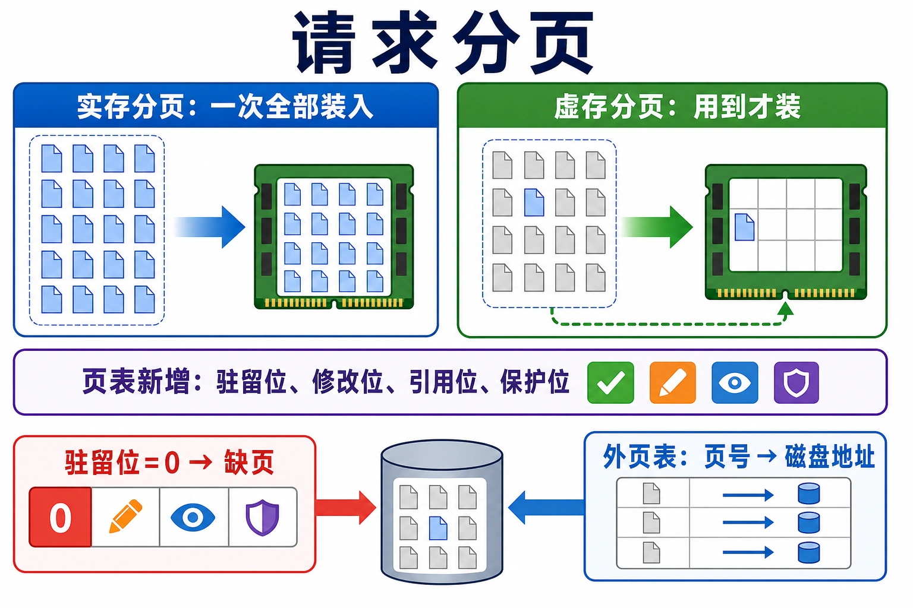
实存分页要求”一次全部装入”，虚存改为”用到才装”。
页表扩展（必备字段）：
| 字段 | 含义 |
|---|---|
| 页号 | 逻辑页号 |
| 内存块号 | 物理页框号 |
| 驻留位（中断位） | 该页是否在主存 |
| 修改位（M / Dirty） | 在内存时被改过吗（决定是否要写回磁盘） |
| 引用位（R） | 最近访问过吗（用于 LRU/CLOCK） |
| 保护位 | 读/写/执行权限 |
外页表：页号 → 磁盘物理地址（系统启动时建立，存磁盘上）。
4.7.5 缺页中断处理流程（slide-115，必背 7 步）
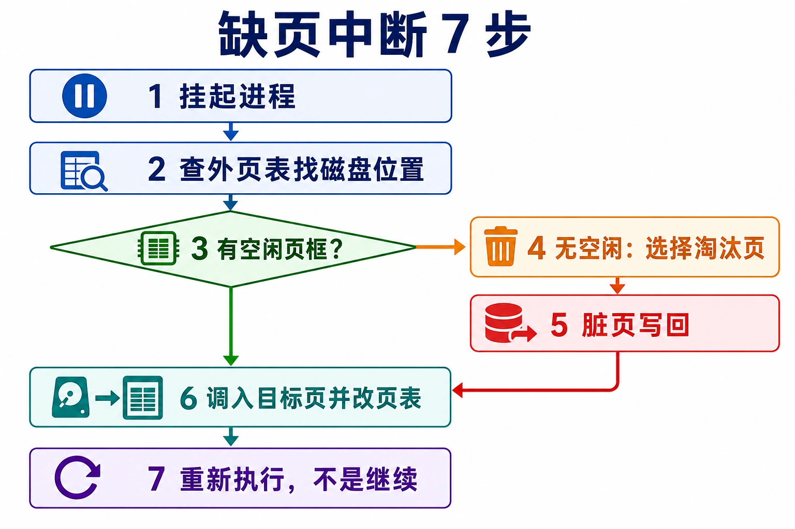
- 挂起当前进程
- 查外页表，找到该页在磁盘的位置
- 主存有空闲页框？有 → 转 6
- 无空闲 → 用置换算法选淘汰页；检查修改位
- 修改位=1 → 写回磁盘原位
- 调页：把目标页装入分配到的页框，修改页表
- 返回断点，重新执行被中断的指令
关键细节：是”重新执行”那条访问指令，不是从断点继续——因为指令可能正执行到一半就缺页。
4.7.6 缺页率公式
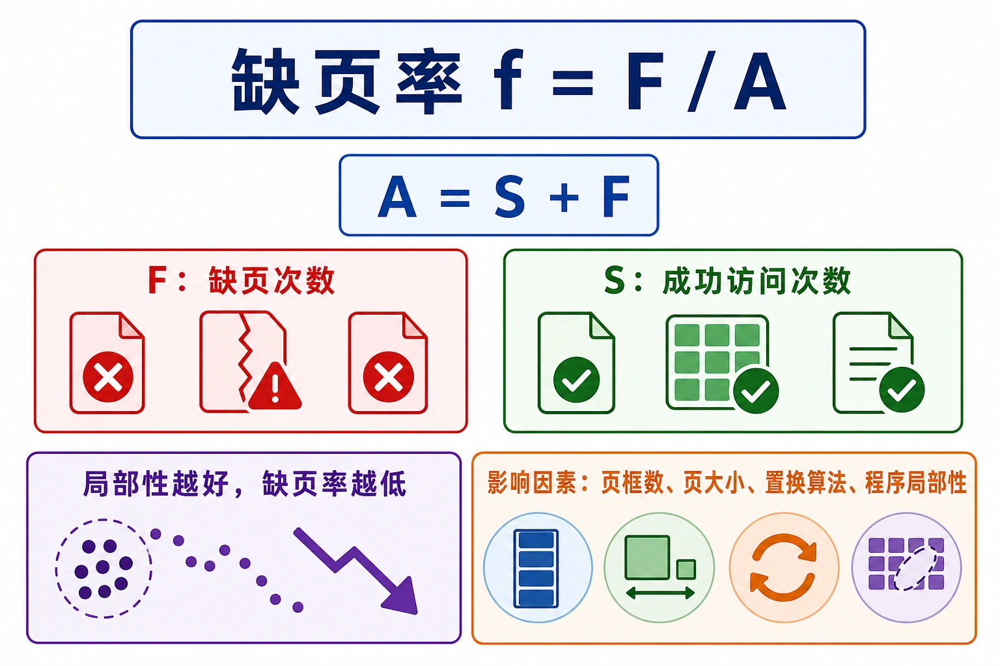
缺页率 f = F / A
其中 A = 总访问次数 = S（成功）+ F（缺页）
slide-155 例题（程序局部性威力）：3 页内存，1 页存程序，2 页存数据；数组 100×100，每页放 200 个数。
// 程序 A：按行遍历 — 与存储顺序一致
for (i=1; i<=100; i++)
for (j=1; j<=100; j++)
A[i][j] = 0;
// 缺页 = 10000/200 = 50 次
// 程序 B：按列遍历 — 与存储顺序相反
for (j=1; j<=100; j++)
for (i=1; i<=100; i++)
A[i][j] = 0;
// 缺页 = 10000/2 = 5000 次 ← 100 倍差距！
面试常考：相同算法，仅访问顺序不同 → 性能差 100 倍。这就是”程序员要懂局部性”的核心理由。
影响缺页率的因素： - 内存页框数（多 → 缺页少） - 页大小（小 → 页表大但缺页粒度细） - 替换算法 - 程序特性（局部性好坏）
4.7.7 页面置换算法（必考重点）
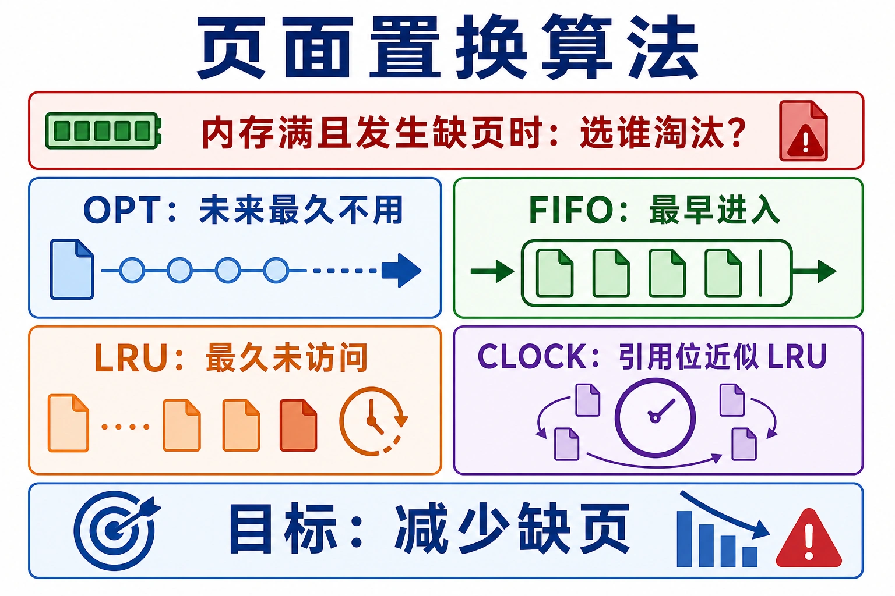
(1) OPT — 最佳置换（理论基线）
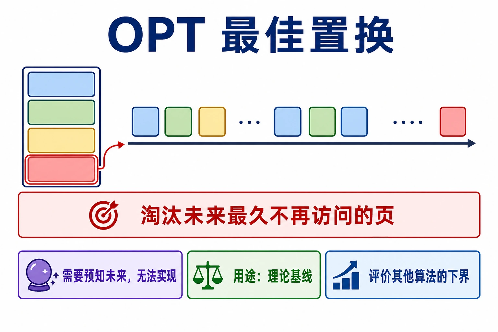
- 淘汰未来最久不被访问的页
- 无法实现（要预知未来）
- 用作其他算法的对比基准
(2) FIFO — 先进先出
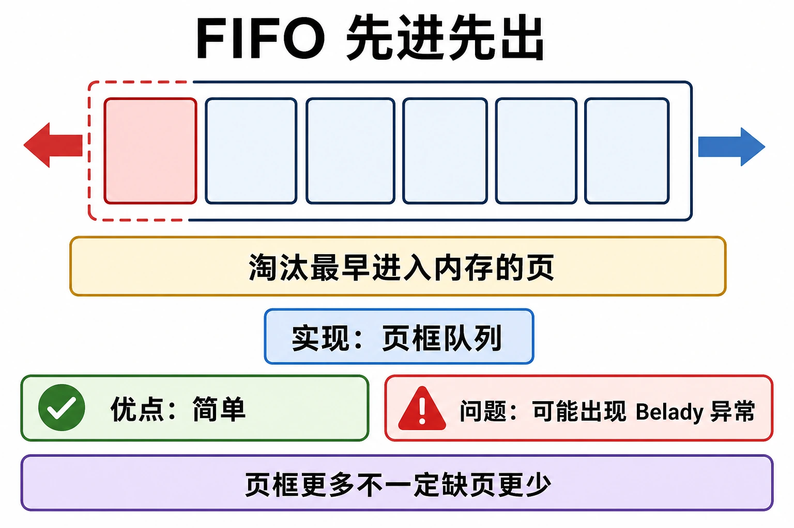
- 淘汰进入内存最早的页
- 实现简单：维护页框队列
- Belady 异常（slide-160）：访问串 4,3,2,1,4,3,5,4,3,2,1,5——分配 3 个页框 vs 4 个页框，4 个页框反而缺页更多！原因：FIFO 与局部性矛盾，被淘汰的不一定是不再用的。
(3) LRU — 最近最少使用
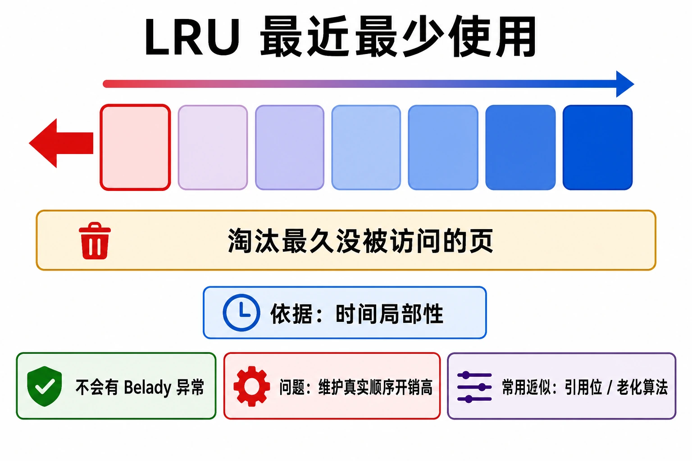
- 淘汰最久没被访问的页（基于”最近用过的还会用”的假设）
- 不会有 Belady 异常
- 实现成本高：
- 页面淘汰队列（每访问一次调整队列）
- 引用位法（NRU 近似）
- 计数法（LFU 变体）
- 计时法 / 老化算法（多位寄存器右移）
slide-165–166 例子：3 个页框，访问 4,3,0,4,1,1,2,3,2，淘汰序列演变看得很清楚。
(4) CLOCK — 时钟（OS 实际常用）
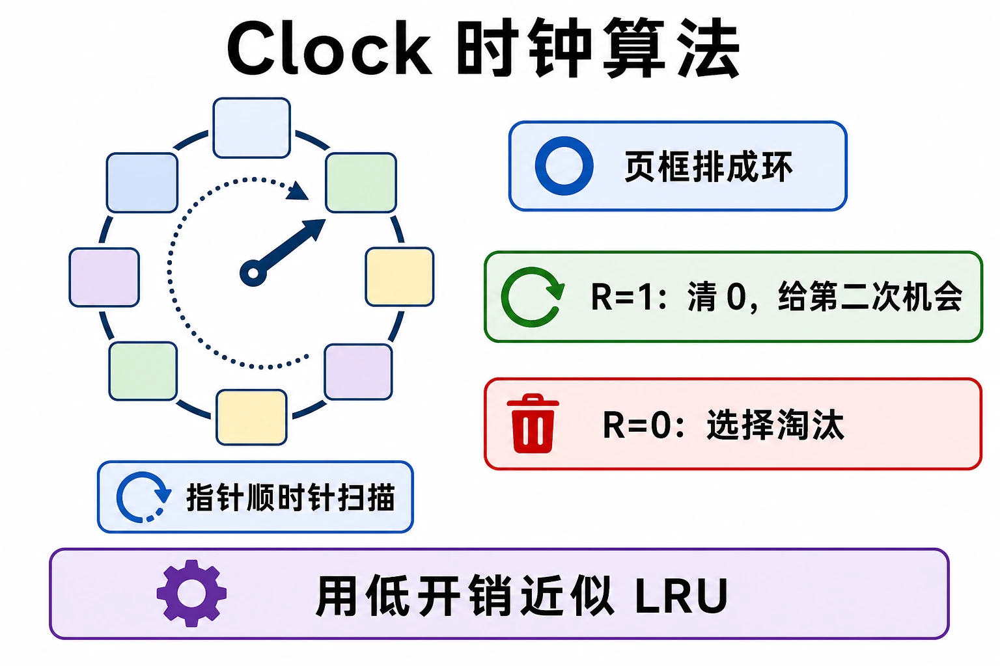
类比：把所有页框排成一圈，有一根指针（时钟指针）。
基本 CLOCK：
- 每页有引用位 R
- 访问页时 R=1
- 淘汰时从指针位置扫描：
- 遇 R=1 → R=0，跳过
- 遇 R=0 → 选中淘汰，指针前进
改进 CLOCK（结合修改位 M 和引用位 R 的 4 种组合）： 1. (R=0, M=0) — 最优先淘汰（既老又干净，不用写回） 2. (R=0, M=1) — 老但脏（要写回） 3. (R=1, M=0) — 最近用但干净 4. (R=1, M=1) — 最近用且脏
扫描两遍：第一遍找 (0,0)；找不到则第二遍找 (0,1)，过程中把 R 清 0。
(5) Second Chance — 第二次机会
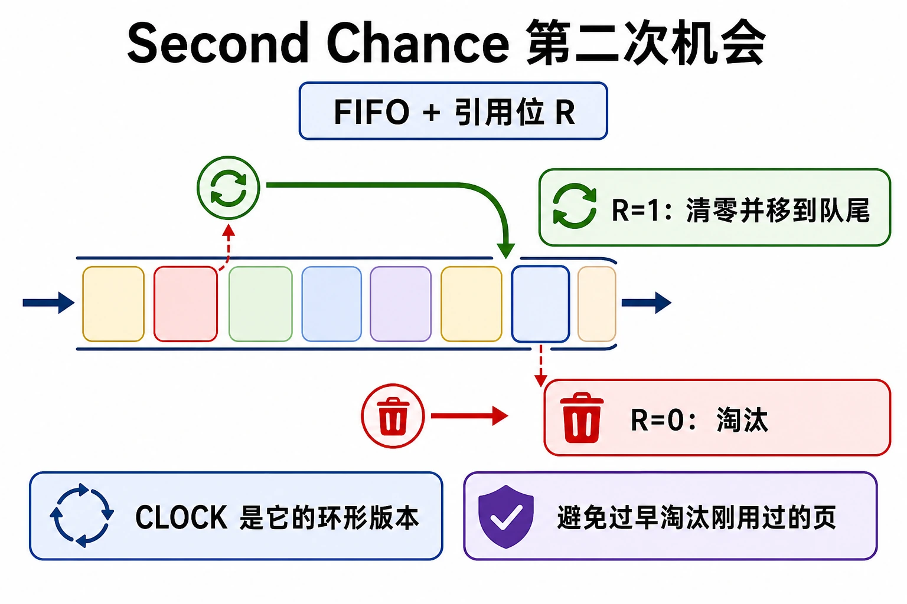
是 FIFO 的改进，碰到 R=1 的”重新当作新页放队尾”。CLOCK 是它的环形版本。
slide-180 性能比较（同访问串 2,3,2,1,5,2,4,5,3,2,5,2，3 个页框）
| 算法 | 缺页次数 |
|---|---|
| OPT | 6 |
| LRU | 7 |
| CLOCK | 8 |
| FIFO | 9 |
记忆：OPT < LRU < CLOCK < FIFO（一般情况下）。
4.7.8 工作集模型 / 抖动（高频考点）
类比：你写论文时桌上摊开的几本最相关的书 = 工作集。窗口尺寸 Δ 就是你”最近多久内用过的算”——比如最近 30 分钟用过的书都摆桌上。
工作集定义
W(t, Δ) = {进程在时间窗口 (t-Δ, t] 内访问过的页面集合}
slide-185 经典图： - 引用串 …2 6 1 5 7 7 7 5 1 6 2 3 4 1 2 3 4 4 4 3 4 3 4 4 1 3 2 3 4 4 4 3 4 4 4… - 在 t1 时刻，向前看 Δ 个引用 → WS(t1) = {1, 2, 5, 6, 7} - 在 t2 时刻 → WS(t2) = {3, 4}（局部性变了，工作集也变了）
驻留集（resident set）：进程实际驻留在内存的页集合。
工作集策略
- 监视每个进程的工作集
- 仅当工作集全部装入内存时才让进程运行
- 定期清出”不在工作集”的页
抖动（Thrashing）
- 现象：CPU 大部分时间在处理缺页中断而非执行用户代码
- 原因：分给进程的页框 < 工作集 → 频繁淘汰马上又要用的页 → 又缺页 → 恶性循环
- 对策：
- 工作集模型（保证驻留集 ≥ 工作集）
- 缺页频率（PFF）算法：动态调整驻留集大小
- 实在不行：挂起一些进程（减少多道程度）
缺页频率（PFF）算法
监测连续缺页之间的时间间隔： - 间隔 > 阈值 τ → 工作集变了，移出窗口内未引用的页 - 间隔 < 阈值 τ → 进程页框不够，加分配
4.7.9 页面分配/置换策略组合
| 分配 | 置换 | 典型应用 |
|---|---|---|
| 固定 + 局部 | 经典做法 | 简单 OS |
| 可变 + 全局 | 灵活 | SVR4 |
| 可变 + 局部 | 平衡 | Windows NT |
| 固定 + 全局 | 不合理 | 不用 |
4.8 章末速查 + 计算题模板
4.8.1 必背公式
分页地址转换：
p = INT[A / L]
d = A mod L
物理地址 = 页框号 × L + d
平均访存时间（带 TLB）：
EAT = (1-p)(TLB + Mem) + p(TLB + 2 × Mem)
缺页率：
f = F / A = 缺页次数 / 总访问次数
多级页表项数：
虚拟空间 / 页大小 = 一级页表项数
4.8.2 地址转换计算题模板
题：32 位逻辑地址，页大小 4KB，进程页表如下，求逻辑地址 0x12345 的物理地址。
- 页大小 4KB = 2¹² → 偏移占低 12 位
- 0x12345 的二进制低 12 位是偏移 d，高 20 位是页号 p
- 0x12345 = 0001 0010 0011 0100 0101，p = 0x12 = 18, d = 0x345
- 查页表第 18 项 → 假设得页框号 0x7
- 物理地址 = 0x7 × 0x1000 + 0x345 = 0x7345
4.8.3 缺页计算题模板
题：进程分配 3 个页框，访问串 7,0,1,2,0,3,0,4,2,3,0,3,2，问 OPT/LRU/FIFO 各缺页几次？
固定流程： 1. 画三行表格（每个页框一行）+ 顶部访问序列 2. 每访问一页，已在内存 → 命中（标 H）；不在 → 缺页（标 F），按算法选淘汰页 3. 数 F 的总数
OPT 选淘汰的诀窍：往后看，谁最远才被用就淘汰谁；后面再也不用的优先淘汰。 LRU 选淘汰的诀窍：往前看，谁最久没用就淘汰谁。 FIFO：维护进入顺序队列，淘汰队首。
4.8.4 概念区分速查
| 容易混 | 要点 |
|---|---|
| 内部 vs 外部碎片 | 内部 = 分区里没用满；外部 = 分区间的小空隙 |
| 分页 vs 分段 | 物理 vs 逻辑；一维 vs 二维；OS 决定 vs 程序员决定 |
| TLB vs Cache | TLB 缓存”页表项”；Cache 缓存”数据” |
| 缺页中断 vs 越界 | 缺页 → 调页继续跑；越界 → 杀进程 |
| 工作集 vs 驻留集 | 工作集 = 应该在的；驻留集 = 实际在的 |
| Belady 异常 | 仅 FIFO 会出现；LRU/OPT 不会 |
| OPT 不能实现的原因 | 要预知未来访问串 |
4.8.5 面试高频问
- 为什么有了分页还要分段？分页解决物理利用率，分段解决逻辑结构（共享、保护、动态扩展）。
- TLB 命中率为什么能这么高？局部性原理 + 关联高速缓存的并行查找。
- 缺页时为什么是”重新执行指令”？指令可能 fetch 一半就缺页，操作数可能跨页，状态难恢复 → 整条指令重做最简单。
- 抖动怎么解决？工作集 + PFF + 必要时挂起进程降低多道程度。
- 写时复制（COW）和虚存什么关系？fork 后父子进程共享物理页，写入时才复制——是请求分页的延伸应用。
- 为什么大多数 OS 选 CLOCK 而不是 LRU？真正的 LRU 维护开销太高（每次访问都要更新顺序）；CLOCK 用引用位近似，性能接近 LRU 但开销小得多。
索引（按 slide 号回查 index.md）
- 三级层次：slide-008/009/010
- 重定位类型：slide-17~21
- 动态分区例题：slide-37/38（含 5 进程表 + 6 步演变）
- 适应算法：slide-44~49
- 移动/对换/覆盖：slide-53~60
- 分页基础：slide-62~75
- 分页地址转换例：slide-72/73
- 分页映射图：slide-65
- 分段：slide-82~98
- 段表/段地址转换：slide-87/88/90
- 虚存概念：slide-100~106
- 缺页处理 7 步：slide-115
- 多级页表 / 反向页表：slide-119~126
- TLB：slide-129
- 段页式：slide-131~141
- 局部性 / 缺页率：slide-154~156
- OPT/FIFO/LRU/CLOCK：slide-158~180
- 工作集：slide-185~191
- PFF：slide-196/197
对话补充：Ch4 易错点 + 考场金句（P0 重灾区）
必背 4 大公式速查
分页地址转换：
页号 p = ⌊A / L⌋, 页内偏移 d = A mod L
物理地址 = f × L + d
TLB EAT：
EAT = T_t + (2 − p) × T_m
缺页 EAT：
EAT = (1 − f) × T_m + f × T_缺页
缺页率：
f = 缺页次数 F / 总访问次数 A
反直觉震撼：缺页率 0.1% = 慢 100 倍
T_m = 100 ns, T_缺页 = 10 ms = 10⁷ ns：
| 缺页率 f | EAT |
|---|---|
| 0% | 100 ns |
| 0.1% | 10100 ns（慢 100 倍） |
| 1% | 100099 ns（慢 1000 倍） |
结论：所以现代 OS 拼命把 f 压到 0.001% 以下——这是 4 大置换算法的存在意义。
4 大置换算法终极对比
| 算法 | 淘汰规则 | 实现 | Belady？ | 优劣 |
|---|---|---|---|---|
| OPT | 未来最久不用 | 不可实现 | ❌ | 理论最优，作为基准 |
| FIFO | 最早进入 | 队列 | ✅ 有！ | 简单，但有 Belady 异常 |
| LRU | 最近最久未使用 | 栈/链表 | ❌ | 性能好，实现成本高 |
| CLOCK | 引用位 R 近似 LRU | 环形 + 指针 | ❌ | 现代 OS 实用方案 |
Belady 异常（必考反直觉点）
经典反例：序列 1,2,3,4,1,2,5,1,2,3,4,5
| 页框 | FIFO 缺页 |
|---|---|
| m=3 | 9 |
| m=4 | 10 ← 反而更多 |
为什么：FIFO 只看进入时间，不看活跃度——多一个页框可能让常用页（1, 2）晚被淘汰，反而让”该淘汰的”提前出局。
关键考点（必背）：
OPT、LRU 没有 Belady 异常，FIFO 有。 因为 OPT 看未来、LRU 看过去活跃度，驻留集随页框单调扩张——多一个页框只会”多保留有用的页”。
LRU 与 FIFO 关键区别（高频辨析）
| FIFO | LRU | |
|---|---|---|
| 淘汰依据 | 进入时间（不变） | 最近使用时间（每次更新） |
| 命中时是否更新顺序 | 不更新 | 更新到最新 |
| 符合局部性原理 | 否 | 是 |
| Belady 异常 | 有 | 无 |
口诀：“FIFO 看进来，LRU 看用过”
分页 vs 分段 vs 段页式终极对比
| 分页 | 分段 | 段页式 | |
|---|---|---|---|
| 用户视角 | 一维 | 二维 (S, d) | 二维 |
| OS 视角 | 一维 | 二维 | 三维 (S, P, d) |
| 大小 | 固定页 | 可变段 | 可变段 + 固定页 |
| 碎片 | 内部 | 外部 | 内部（段内最后一页） |
| 访存次数（无 TLB） | 2 | 2 | 3 |
| 共享 | 难 | 易 | 易 |
口诀：“分页死板省内存，分段灵活便共享，段页式两全代价高”
内/外部碎片判断口诀
被分了用不完 = 内部碎片（分配单元内部浪费） 分不出去 = 外部碎片（空闲单元间小到没法分）
Ch4 易错点 Top 10
- ❌ 物理地址停在表达式：
9×4096+308必须算成 37172——“答案不完整”会扣分 - ❌ EAT 公式两版混淆：含 TLB vs 含缺页是两个公式，看清题目场景
- ❌ LRU 命中时忘了把页移到最新——常见错把 FIFO 当 LRU 用
- ❌ Belady 误以为通用现象：只 FIFO 有，OPT/LRU 没有
- ❌ 缺页率分母错：是”总访问次数”不是”装入次数”
- ❌ 碎片方向反：被分了用不完=内部，分不出去=外部
- ❌ 段页式访存答 2：实际 3 次（段表 + 页表 + 数据）
- ❌ 抖动 = 缺页：抖动是”持续大量缺页导致 CPU 干不了活”，单次缺页不算抖动
- ❌ TLB 命中率 vs 未命中率搞混：题面给哪个，公式相应调整
- ❌ 页内偏移 d 没检查 < L：sanity check 必做
局部性原理（必背简答）
| 含义 | 例子 | |
|---|---|---|
| 时间局部性 | 最近访问的，很可能马上又访问 | 循环、局部变量 |
| 空间局部性 | 访问某地址，很可能马上访问相邻地址 | 数组、顺序代码 |
核心一句话：虚拟存储基于局部性原理——只把”当前用的页”装内存，其他放磁盘按需调入。
抖动（Thrashing）的因果链
驻留集 < 工作集 → 持续大量缺页 →
CPU 大量时间处理缺页中断而非用户代码 →
进程间互相抢页（互相淘汰对方的页） →
CPU 利用率急剧下降 → 系统看似很忙但完不成什么活
3 种解法：工作集模型 / PFF 缺页频率控制 / 挂起部分进程降低多道程度
Ch4 简答考场金句速查
| 问 | 答（金句） |
|---|---|
| 为什么需要虚拟内存 | 物理内存有限但程序总虚拟空间可能远大；基于局部性原理，只装当前用的页，让小内存跑大程序 |
| TLB miss 时怎么办 | 从内存查完整页表，把这条结果填入 TLB，再访存取数据，未命中需 2 次访存 |
| 为什么 FIFO 有 Belady 而 LRU 没 | FIFO 只看进入时间与活跃度无关，扩张时驻留集可能完全不同；LRU 看活跃度，驻留集随页框单调扩张 |
| 抖动怎么避免 | 工作集模型动态分配页框；PFF 缺页频率控制；挂起部分进程降低多道程度 |
| 为什么页大小是 2 的幂 | 地址计算用位运算（移位 + 与）代替除法/取模，硬件实现快几个数量级 |